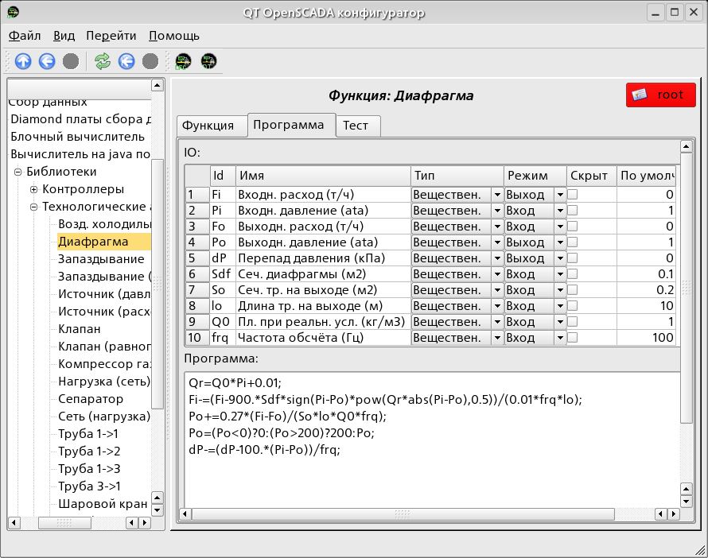
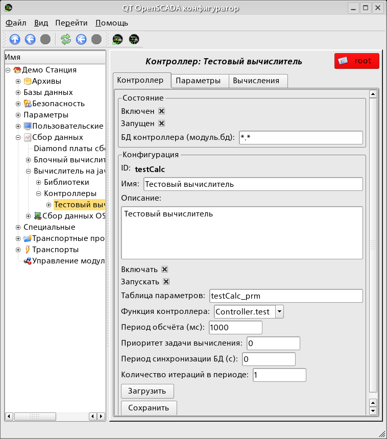
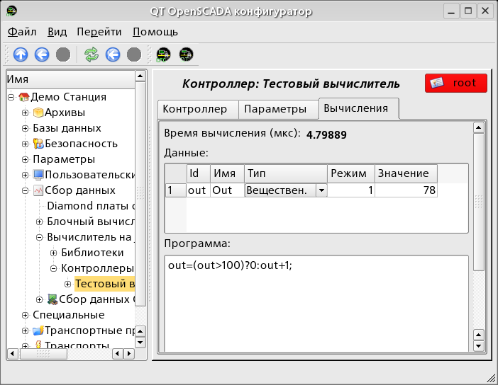
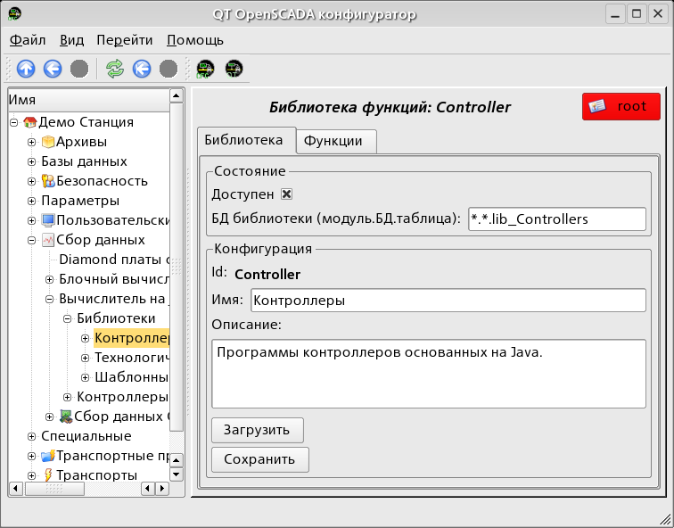

Предоставляет
основанные на java подобном языке вычислитель и движок
библиотек. Пользователь может создавать и модифицировать функции
и библиотеки.
Лицензия:
GPL
Введение
Модуль контроллера JavaLikeCalc
предоставляет в систему механизм создания функций и их
библиотек на Java-подобном языке. Описание функции
на Java-подобном языке сводится к обвязке параметров функции
алгоритмом. Кроме этого, модуль наделен функциями непосредственных
вычислений путём создания вычислительных контроллеров.
Непосредственные вычисления обеспечиваются созданием контроллера
и связыванием его с функцией этого же модуля.
Для связанной функции создаётся кадр значений, над которым
и выполняются периодические вычисления.
Параметры функции могут свободно создаваться, удаляться
или модифицироваться. Текущая версия модуля поддерживает
до 255 параметров функции в сумме с внутренними
переменными. Вид редактора функций показан на рис.1.

Рис.1. Вид редактора функций.
После любого изменения программы или конфигурации параметров
выполняется перекомпиляция программы с упреждением связанных
с функцией объектов значений TValCfg. Компилятор языка построен
с использованием известного генератора грамматики «Bison», который
совместим с не менее известной утилитой Yacc.
Язык использует неявное определение локальных переменных, которое
заключается в определении новой переменной в случае
присваивания ей значения. Причём, тип локальной переменной
устанавливается в соответствии с типом присваиваемого
значения. Например выражение <Qr=Q0*Pi+0.01;> определит
переменную Qr с типом переменной Q0.
В работе с различными типами данных язык использует механизм
автоматического приведения типов в местах где подобное
приведение является целесообразным.
Для комментирования участков кода в языке предусмотрены
символы «//». Всё что идёт после данных символов до конца
строки игнорируется компилятором.
В процессе генерации кода, компилятор языка производит оптимизацию
по константам и приведение типов констант к требуемому
типу. Под оптимизацией констант подразумевается выполнение
вычислений в процессе построения кода над двумя константами
и вставка результата в код. Например выражение
<y=pi*10;> свернётся в простое присваивание
<y=31.4159;>. Под приведением типов констант
к требуемому типу подразумевается формирования в коде
константы, которая исключает приведение типа в процессе
исполнения. Например выражение <y=x*10>, в случае
вещественного типа переменной x, преобразуется в <y=x*10.0>.
Язык поддерживает вызовы внешних и внутренних функций.
Имя любой функции, вообще, воспринимается как символ,
проверка на принадлежность которого, к той или иной
категории, производится в следующем порядке:
ключевые слова;
константы;
встроенные функции;
внешние функции;
уже зарегистрированные символы переменных;
новые атрибуты системных параметров;
новые параметры функции;
новая автоматическая переменная.
Вызов внешней функции, как и атрибута системного параметра,
записывается как адрес к объекту динамического дерева
объектной модели системы OpenSCADA в виде:
<DAQ.JavaLikeCalc.lib_techApp.klapNotLin>.
шестнадцатеричные: цифры 0–9, буквы a-f или A-F (0x12, 0XAB);
вещественные: 345.23, 2.1e5, 3.4E-5, 3e6;
логические: true, false;
строковые: «hello».
Типы переменных:
целое: -231...231;
вещественное: 3.4 * 10308;
логическое: false, true;
строка: длина любая но без перехода на другую строку.
Встроенные константы: pi = 3.14159265, e = 2.71828182, EVAL_BOOL(2), EVAL_INT(-2147483647), EVAL_REAL(-3.3E308), EVAL_STR("<EVAL>") Атрибуты параметров системы OpenSCADA (по объектной модели). Функции объектной модели системы OpenSCADA.
1.2 Операции языка
Операции поддерживаемые языком представлены в таблице ниже.
Приоритет операций уменьшается с верху вниз. Операции
с одинаковым приоритетом входят в одну цветовую группу.
Символ
Описание
()
Вызов функции.
{}
Программные блоки.
-
Унарный минус.
!
Логическое отрицание.
~
Побитовое отрицание.
*
Умножение.
/
Деление.
%
Остаток от целочисленного деления.
+
Сложение
-
Вычитание
>
Больше
>=
Больше или равно
<
Меньше
<=
Меньше или равно
==
Равно
!=
Неравно
|
Поразрядное «ИЛИ»
&
Поразрядное «И»
^
Поразрядное «Исключающее ИЛИ»
&&
Логический «И»
||
Логический «ИЛИ»
?:
Условная операция (i=(i<0)?0:i;)
=
Присваивание.
+=
Присваивание с сложением.
-=
Присваивание с вычитанием.
*=
Присваивание с умножением.
/=
Присваивание с делением.
1.3 Встроенные функции языка
Для обеспечения высокой скорости работы в математических
вычислениях модуль предоставляет встроенные математические функции,
которые вызываются на уровне команд виртуальной машины. Встроенные
математические функции:
sin(x) — синус x;
cos(x) — косинус x;
tan(x) — тангенс x;
sinh(x) — синус гиперболический от x;
cosh(x) — косинус гиперболический от x;
tanh(x) — тангенс гиперболический от x;
asin(x) — арксинус от x;
acos(x) — арккосинус от x;
atan(x) — арктангенс от x;
rand(x) — случайное число от 0 до x;
lg(x) — десятичный логарифм от x;
ln(x) — натуральный логарифм от x;
exp(x) — экспонента от x;
pow(x,y) — возведение x в степень y;
sqrt(x) — корень квадратный от x;
abs(x) — абсолютное значение от x;
sign(x) — знак числа x;
ceil(x) — округление числа x до большего целого;
floor(x) — округление числа x до меньшего целого.
1.4 Операторы языка
Языком модуля поддерживаются два типа условных операторов. Первый
это условный оператор для использования внутри выражения,
второй – глобальный.
Условный оператор для использования внутри выражения строится
на операциях «?» и «:». В качестве примера можно
записать следующее практическое выражение
<st_open=(pos>=100)?true:false;> что читается
как «Если переменная pos больше или равна 100
то переменной st_open присваивается значение true иначе false.
Глобальное условие строится на основе ключевых слов «if»
и «else». В качестве примера можно привести тоже выражение,
но записанное другим способом <if(pos>100) st_open=true;
else st_open=false;>. Как видно выражение записано
по другому но читается также.
1.5 Примеры программы на языке
Приведём несколько примеров программ на Java-подобном языке:
Контроллер этого модуля связывается с функциями из библиотек
построенных с его помощью, для обеспечения непосредственных
вычислений. Для предоставления вычисленных данных в систему
OpenSCADA, в контроллере могут создаваться параметры. Пример
вкладки конфигурации контроллера данного типа изображен на рис.2.

Рис.2. Вкладка конфигурации контроллера.
С помощью этой вкладки можно установить:
Состояние контроллера, а именно: «Включен», «Запущен» и имя БД содержащей конфигурацию.
Идентификатор, имя и описание контроллера.
Состояние в которое переводить контроллер при загрузке: «Включен» и «Запущен».
Имя таблицы для хранения параметров.
Адрес вычислительной функции.
Период, приоритет и число итераций в одном цикле задачи вычисления.
Период автоматической синхронизации блоков с БД.
Сохранить/загрузить контроллер в БД.
Вкладка «Вычисления» контроллера (Рис. 3) содержит параметры
и текст программы непосредственно выполняемой контроллером. Также,
для контроля выполнения, выводится время вычисления программы.

Рис.3. Вкладка «Вычисления» контроллера.
3 Параметр контроллера и его конфигурация
Параметр контроллера данного модуля выполняет функцию предоставления
доступа к результатам вычисления контроллера в систему
OpenSCADA посредством атрибутов параметров. Из специфических
полей, вкладка конфигурации параметра контроллера содержит только поле
перечисления параметров вычисляемой функции, которые необходимо
отразить.
4 Библиотеки функций модуля
Модуль предоставляет механизм для создания библиотек
пользовательских функций на Java-подобном языке. Пример вкладки
конфигурации библиотеки изображен на Рис.4. Вкладка содержит
базовые поля: состояния, идентификатор, имя и описание,
а также адрес таблицы хранящей библиотеку. Во вкладке
«Функции» библиотеки, кроме перечня функций, содержится форма
копирования функций.

Рис.4. Вкладка конфигурации библиотеки.
5 Пользовательские функции модуля
Функция, также как и библиотека, содержит базовую вкладку
конфигурации, вкладку формирования программы и параметров функции
(Рис.1), а также вкладку тестирования созданной функции.